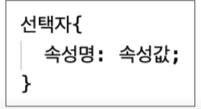
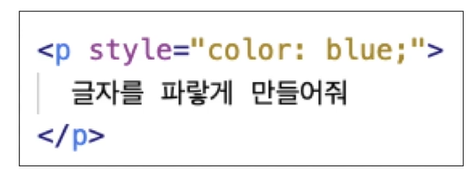
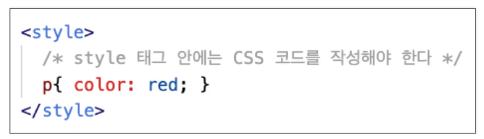
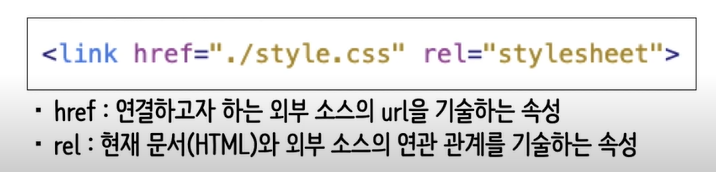

CSS 기본 문법

선택자 : 어떤 요소에 스타일을 적용 할지에 대한 정보
{중괄호} : 선택한 요소에 적용할 스타일을 정의하는 영역
속성명 : 어떤 스타일을 정의하고 싶은지에 대한 정보(색상, 크기등)
속성값 : 어떻게 정의하고 싶은지에 대한 정보
HTML에 CSS를 적용하려면
- 인라인 스타일 : 태그에 직접 기술
태그에 style 속성을 추가하여 요소에 직접적으로 스타일을 정의하는 방식.
따라서 선택자 필요 x

- 스타일 태그 : 스타일시트를 위한 태그를 추가하여 기술

- 문서 간의 연결 : 스타일 시트 문서를 따로 작성하여 HTML 문서와 연결

link 태그는 HTML 문서의 head 내부에 사용해야 한다.